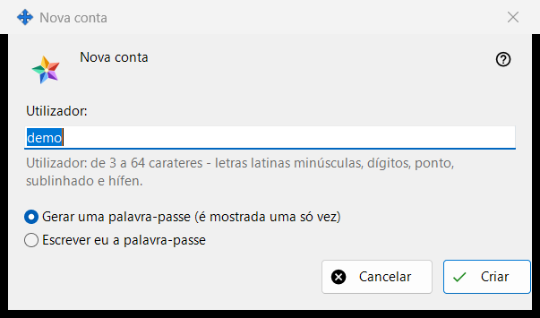
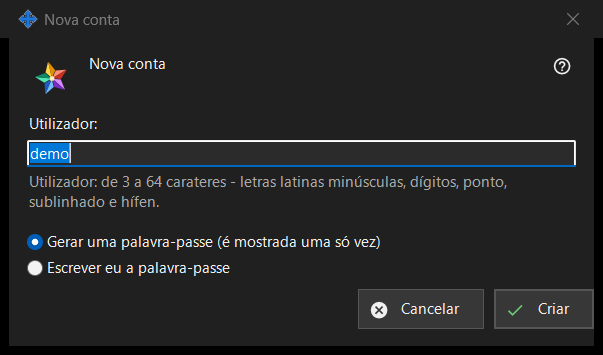

Nova conta
Finalidade
Uma janela com dois modos. «Nova conta» adiciona uma conta ao Media Exchange Server que você gerencia; «Redefinir senha: <login>» dá uma nova senha a uma conta existente. Elas se abrem a partir de «Adicionar uma conta..» e «Redefinir senha..» abaixo da lista de contas na página Media Exchange Server das configurações do Share Manager; para redefinir é preciso ter uma conta selecionada.


Nesta ordem
- No modo de adição, digite o usuário.
- Escolha como a senha é criada.
- No modo de redefinição, decida se todos os dispositivos da conta são desconectados.
- Clique em «Criar» ou «Redefinir».
- Copie a senha gerada da janela seguinte ou digite a sua.
Os elementos
Declaração para a primeira conta
Na primeiríssima conta, a janela começa com «Antes de criar a primeira conta, leia o que o operador do servidor pode ver:» e uma caixa somente leitura com a declaração. As contas seguintes e as redefinições não a mostram.
Usuário
Apenas no modo de adição. De 3 a 64 caracteres: letras latinas minúsculas, dígitos, ponto, sublinhado e hífen; as maiúsculas são convertidas em minúsculas. A indicação passa à cor de aviso enquanto o texto não puder ser um usuário, e «Criar» não avança até que o possa ser.
Como a senha é criada
«Gerar uma senha (é mostrada uma só vez)» é a opção padrão: o programa cria uma senha aleatória que cumpre as regras e a janela seguinte a mostra uma única vez. «Digitar a senha eu mesmo» abre a janela «Senha da conta», onde uma linha em tempo real indica o que falta: pelo menos 10 caracteres com uma letra latina maiúscula, uma minúscula e um dígito.
Desconectar todos os dispositivos
Apenas no modo de redefinição. «Desconectar também imediatamente todos os dispositivos desta conta» vem marcada por padrão. A linha de resultado indica então que a senha foi alterada e que todos os dispositivos da conta foram desconectados; sem a marca, indica apenas que a senha foi alterada.
Depois que o servidor aceitar
A linha de resultado indica que a conta foi criada. Uma senha gerada aparece uma só vez na sua própria janela com «Copiar senha» e «Definir minha própria senha..», que volta à redefinição com a opção «Digitar a senha eu mesmo». Com «Guardar as senhas das contas neste PC» ativado, a senha também fica salva neste PC e a conta ganha «Mostrar senha..». Se esta compilação oferecer as funções de cliente da troca e este PC não tiver conta própria, entra como primeiro dispositivo da conta com esta senha.
Configurações do gerenciador · Configurações de compartilhamento SFTP · Configurações do servidor de troca